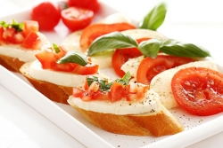
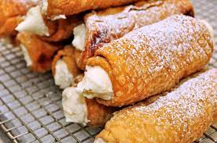
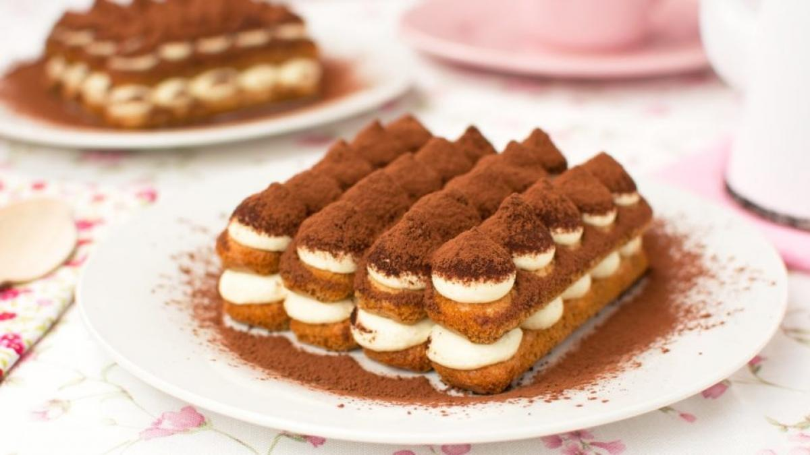
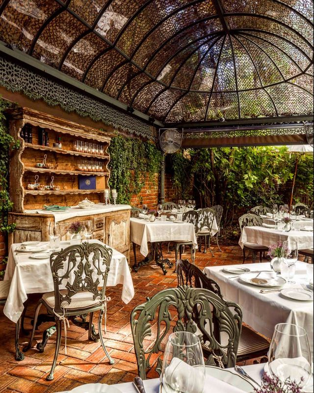

La Trattoria de Giuseppe





Cuadro Información
Dentro de este apartado encontrará
las múltiples opciones alimentarias
en función de sus necesidades e
intolerancias.
Opciones
Menú personalizable
+Menú infantil
+Organización de eventos
como cumpleaños y bodas.
Ofertas
Todo los jueves oferta de 50%
en carta en productos seleccionados.
Reserva con antelación y disfruta de
un postre completamente gratuito.
|  |
Disponibilidad:
Los horarios están sujetos al calendario de festivos
|
|---|